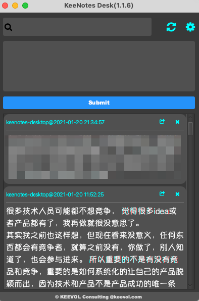

分享一个注重隐私的信息管理工具
王福强
2021年虽然依然是疫情严重的一年，但也是顶住压力继续创造的一年， 新的一年，为大家介绍一个新开源的注重隐私的信息管理工具-KeeNotes。
这个工具的设计和开发的初衷是小时候老师经常念叨的一句话：“好记性不如烂笔头儿”， 虽然自诩脑瓜子没那么笨，但随着年纪渐长，这记性还真感觉有点儿越来越疲弱地不敢依赖了，遂就有了“想到什么就记录什么”的需求。
之前做这个事情也有“解决方案”，那就是通过公众号、Slack、Web页面等形式随手记录，但实际上， 并非所有的信息都愿意通过公网信道传输（即使传说中加了密的也不行），所以， 在新的一年就决定开发一个集私密性、易备份、易检索等特征的信息管理工具，KeeNotes Desktop遂孕育而生。
KeeNotes的设计有几个理念：
- Privacy First， 即私密性是第一性要求，把注重信息的私密性放在第一位。 我相信每个人都有想分享的信息，也有不想分享的信息，而前者其实是后者的子集；
- easy to backup，即易备份。 大部分个人的信息储量并不需要像ElasticSearch之类的分布式系统来存储和检索， 也就不需要复杂的Snapshot等机制来保障信息的完整性，一个文件可以拷贝（copy），那是最好的；
- Immutable， 即信息不怕冗余，只怕丢失甚至误操作删除。 虽然后面根据‘天使客户’的需求加了一个delete操作的入口，但并没有添加update操作，原因就是配合delete和append操作，可以最小化的功能集完成update同样的需求目标。
- Searching As Filtering， 检索即过滤， 这是针对界面设计来说的，检索条件的输入实际上对应到UI界面上就是信息只显示基于检索条件的记录，当然，能把搜索功能说的这么厚颜无耻，也就我了吧；）
- text only，文本优先，虽然今天图片、（短）视频等形式的信息也已经是主流，但碎片化的想法、闪念等，使用文本依然是最简单有效的形式。最初原本还想追加“Tagging”的场景， 但最终因为只专注文本（text）而得以省却了，毕竟搜索关键字其实就是最好的tag；
- stay on the desktop， 即触手可及（长驻桌面）。 有想法，随手就可以记，“烂笔头儿”的数字对等物是也；
KeeNotes是一个注重信息私密性的短文本信息管理工具， 它不是Evernote/Notion/OneNote之类的富长文本/多媒体信息管理工具或者说效率工具的竞品， 它的竞品在产品的首页有记录，大家感兴趣可以挪步观瞧。
说了这么多，正事儿其实没提（大家毕竟都是外貌协会的嘛）， KeeNotes长这个样子：

其实没啥复杂的东西，就是一个记录、展示加检索。
当然，KeeNotes也提供了设置界面（点击右上角那个齿轮），可以对Note的文本进行字体等设置。
另外，像“双击Note卡片即可拷贝内容到剪切板”等小技巧，大家如果感兴趣可以自行去发现哟～
好啦，今天就说到这里吧， 后面如果有更多人对这个工具感兴趣， 我会慢慢释出更多的特性和使用技巧的～
欢迎大家试用，有问题可以github提issue ；）
最后， 2021年祝大家牛气冲天，一起冲散疫情的阴霾～
欢迎加入「福强私学」
跨越2190个日夜，始终坚持“实践 + 原创”打造的715125字专属知识库，囊括了（但不限于）从职场、技术、管理与商业等多个板块的内容。
- 一个ChatGPT触达不到的地方
- 一个带你超越AI/人工智能的地方
- 一个与你一起成长的地方

开天窗，拉认知，订阅「福报」，即刻拥有自己的全模态人工智能。